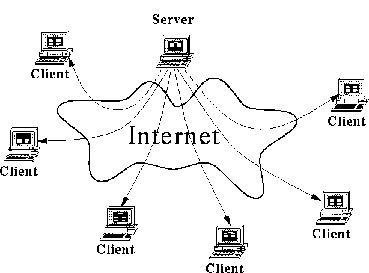
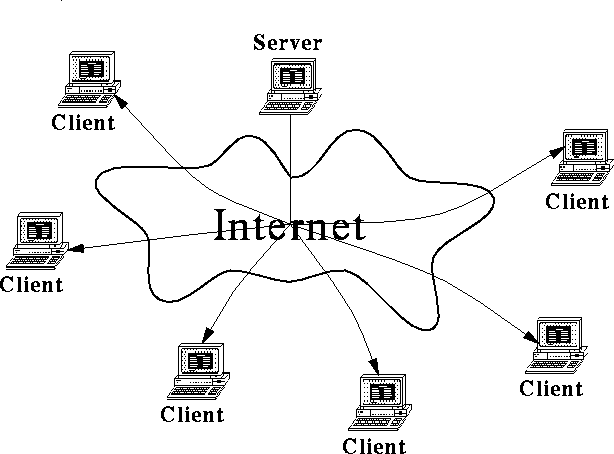

Multicast:
The Future Internet Communication Paradigm
Michael J. Donahoo
Demands on Internet services are growing at a phenomenal rate. Over
its lifetime the Internet has sustained an exponential growth in the
number of users. Figure 1
demonstrates the actual growth in the number of hosts in the
Internet over the past five years[12].
in the
Internet over the past five years[12].
Figure: Growth of Internet Hosts
At this point, the Internet's growth has reached sufficient
mass to become a self-feeding. Users lured by the wide
variety of available information and services can easily connect up to
the Internet through Internet Service Providers (ISPs) such as America
Online (AOL). The explosion of users encourages even more development
of new applications (e.g. RealNetworks, www.real.com). This imposes a
vicious cycle
of exponential growth on the Internet with more users begetting more
applications and more applications attracting more users. In
addition, primordial Internet applications, such as email, demanded
little bandwidth.
With the commercialization of the Internet, the bandwidth demands of
specific applications have grown considerably. For example,
there are now Internet applications which stream video and audio at
bandwidths considerably higher than generated by the early Internet
applications.
While Internet demands continue to grow at a phenomenal rate because
of user population and application bandwidth requirement increases,
the infrastructure's capabilities are not keeping pace. Some mechanisms must be
found to better utilize the existing bandwidth, if the Internet is to
sustain its current growth rate. One such mechanism which has drawn
serious attention from industry and researchers is multicast.
Currently, Internet server applications utilize a point-to-point
connection protocol, called unicast (``uni'' means one; ``cast'' means
send) for communicating with client applications[7, 8];
consequently, for each new client, the server must establish, support,
and maintain a separate connection. Figure 2
represents the current unicast approach.

Figure: Unicast Connections from Server to Clients
A new communication paradigm called multicast (``multi'' means many)
allows a server application to send a single message to multiple
recipients[5, 2, 9]. The Internet, upon receiving the
message, is responsible for efficiently delivering the message to all
intended
recipients. Consider Figure 3 which represents the
single multicast connection of a server to a set of clients. Of
course in this
case, unlike Figure 2, all of clients receive the same
message. This means that only application which are sending duplicate
data simultaneously to multiple clients can most effectively use
multicast.

Figure: Multicast Connection from Server to Clients
Multicast provides two distinct advantages over the current unicast
paradigm:
- Efficient Utilization:
-
Multicast communication provides Internet server applications the
ability to communicate more efficiently with very large groups of clients.
Consider the example of Figure 4.
The dashed lines of Figure 4 represent the messages
which must be sent over the Internet with the current unicast model.
The routers
of the Internet (denoted by an X) are
responsible for properly directing messages from a sender to a
receiver. Note that some of the links in the network carry the
message twice because they are on the common path between the
sender and receivers. On the other hand, consider the solid lines of
Figure 4 which indicate the multicast of the
same message. Note that on the common paths only one copy of the
message is sent. Since fewer messages are needed, multicast is more
efficient than unicast.
Figure: Multicasting in Internet Routers
Consider Pointcast (www.pointcast.com) which makes a free
screen saver product that, along with advertisements, sends
information (e.g. stock prices, sports scores, etc.) to
tens-of-thousands of desktop computers. These screen savers update
themselves every fifteen minutes by sending a request to a Pointcast
server. Each request from each desktop
computer spawns the creation of a separate unicast connection from the
server to the client through the Internet to send the updates. It is
estimated that approximately 30% of the current Internet traffic is
Pointcast related.
Much of the information sent by Pointcast servers to each client is
redundant. That is, most Pointcast clients are after the same
information. Instead of
maintaining a connection and resending this redundant information for
each client, the server can use multicast to send the message
once to all the clients. This saves significant Internet
bandwidth.
- Application Enabler:
-
Multicast enables applications which are not possible with unicast.
Consider a server with a 3 megabyte bandwidth connection to the
Internet. If this server wants to send live video to the Internet and
the video requires 1 megabyte of bandwidth per second, the server can
at maximum service 3 simultaneous clients with unicast. With
multicast, no matter how many clients are in the Internet, the
connection between the server and Internet need only carry 1 megabyte
of video per second. Applications such as large-scale, live video
distribution which are currently not possible will be enabled with the
addition of multicast as an Internet service.
While the multicast communication paradigm was specified in the
original Internet protocol[7], specification and
implementation of the necessary support in the network was not
performed. In the early 1990's, researchers started work to add
multicast capabilities to limited regions of the Internet,
beginning with the establishment of an experimental multicast backbone
called the MBone[6].
Currently, Internet multicast messaging can only happen between
computers which are connected to the MBone. Many otherwise impossible
services have been implemented on the MBone. For example, users on
the MBone can
attend a weekly ``Multimedia Seminars'' at Berkeley, interactively
participate in
conferences, view the current contents
of a refrigerator in France, and even view a live concerts (e.g. 1996 Rolling Stones). Currently, connectivity to the MBone is limited to research
institutions and very large corporations, and for the most part no
access is granted to
ISP modem users. Most modern computer equipment, including Internet
routers, are currently capable of supporting multicast. The service
need only be ``turned on;'' however, most ISPs have multicast turned
off.
At this time, there is not agreed upon standard for implementing
multicast in the Internet. The Internet Engineering Task Force
(IETF), an Internet standards organization, is currently considering
several proposals[11, 1, 3, 10]. Proprietary
standards also exist, lending some confusion for ISP providers as to
which proposed standard to adopt.
While multicast is clearly an important technology in sustaining the
growth of the Internet, its future is not so clear. Many forces are
coming into play to determine when, if, and how it will be deployed.
The issues have become so important to corporations and government
agencies that a large, collaborative effort, called the IP Multicast
Initiative (IPMI), has been formed to determine that fate of
multicast. This organization (www.ipmulticast.com) has an impressive
collection of some of the biggest players in the Internet including
Microsoft, AT&T, IBM, and Sun. Effectively, the goal of this
organization is to negotiate the implementation Internet-wide
multicast. Since multicast will enable a more substantial growth in
Internet users and a new class of applications, each member of this
initiative has significant stakes in the outcome. We consider each
type of ``player'' and their likely motivations:
- Software Providers:
- Microsoft, still stinging from its miss of
the desktop publishing revolution, thinks that the Internet is the
next big technology driver. Initially, many of the ``cool'' Internet
applications existed only in the UNIX domain. When the Internet went
commercial, Windows software providers spent years just
catching up with UNIX. Microsoft wants Windows to become the platform
of Internet innovation, instead of a UNIX follower. The multicast application
software base is still predominantly UNIX, but it is very immature.
In the area of multicast applications, Microsoft could easily catch
and surpass UNIX, becoming the premier platform from which to leverage
multicast Internet technology; consequently, Microsoft has a
significant interest in a ubiquitous, seamless multicast environment
taking shape. They have already integrated multicast functionality in
both Windows 95 and NT. Other companies such as Precept (www.precept.com) want
to provide IP/TV (Internet television) for corporations. Multicast
will enhance IP/TV's performance, increasing the demand for their
products.
- Internet Hardware Providers:
- Companies like Fore, Novell,
Cisco, and 3Com provide the equipment which operates the Internet.
If the Internet and corporation intranets are to utilize multicast,
purchases of new switching hardware and software must be made. The
transition to multicast will provide opportunities to charge for
replacement of legacy network systems and for greater product
differentiation (e.g. 3Com and Cisco have products tailored to enhance
the support of specific applications, such as voice transmission).
- Server Providers:
- While it is fine to purchase an inexpensive
computer for a user's desktop, Internet servers require significant
hardware resources. Companies like HP, Sun, SGI, IBM,
and DEC have joined IPMI because newer, fancier applications usually
need greater server computation power. These companies have considerable
investment in very powerful servers which would be well suited for
support of new multicast-enabled applications.
- Internet Service Providers:
- ISPs are ``where the rubber meets
the road'' in the provision of multicast service. Currently, most
ISPs are choosing not to enable multicast support for their clients
for two reasons. First, ISPs fear the potential havoc that multicast
can reap on their networks. Consider a user connected by a 14.4Kbps modem to
an ISP. Without multicast, the user can generate at maximum 14.4Kbps
of data within the ISPs network. With multicast, the 14.4Kbps stream
of data can grow exponentially within the network because the stream
can be replicated at each router. Kilobit connections can quickly
grow to megabit bandwidth consumption. Second, ISPs recognize that
this is an important technology enabling service for corporations;
therefore, they want to figure out how to charge for it, even if
overall enabling the service saves them bandwidth.
- End-User Hardware Providers:
- Processors for end-user computers
are rapidly increasing in power. Companies, such as Intel, are
constantly searching for reasons to compel users to upgrade to
faster and faster processors. The new class of applications enabled
by multicast will most likely require more powerful end-user
processing capabilities. These
so called ``hybrid'' applications will provide upgrade processor
necessities for end-users; therefore, Intel has added its muscle in
support of multicast services.
- IP Software Services:
- Multicast provides only the most
rudimentary functionality, namely best-effort delivery of data.
Packets of data in the Internet can be legally lost, duplicated, or
delivered out of order by multicast. Software services must be
implemented on top of multicast to enable service such as reliable
delivery. Software companies such as Starburst, Precept, and FTP
software need multicast to succeed for their products to be useful.
- Government:
- The government effectively washed its hands of
responsibility for the Internet by privatizing it all in the last few
years (except, of course, for trying to regulate the Internet's
content). Government organizations, such as NASA, have joined IPMI as
a user,
but they are no longer the controlling authority. It is doubtful that
they will take a more active role in the future.
- Standards Groups:
- Various collaborative standards groups such
as the IETF have defined many of the protocols in use in the Internet
today. To maintain their relevance and maintain their research
revenue stream, these groups must work to make sure that their standards win
the multicast standards debate. The MBone is currently operated on an
IETF standard.
- October, 1997:
- UUNet
introduces UUCast, a multicast service based on IETF open
standards, to all their users. Multicast senders must pay for a
dedicated UUCast connection. UUCast was initially used by CNN
Interactive, Microsoft Network (MSN) Online service, and
Audionet. MCI's @ Home Network, utilizing proprietary protocols,
also provides multicast service to subscribers.
- February, 1998:
- With the acquisition complete of MCI by Worldcom,
MCI's proprietary multicast service is quietly put to rest
and replaced by UUNet's (also a Worldcom subsidiary) UUCast.
- March, 1998:
- The IETF standardizes with PIM[4]
for intradomain and GUM[10] for interdomain multicast
routing. Since IETF standards are utilized by the dominant ISP
players, this opens the path for Internet hardware vendors to
implement a standard multicast protocol for all future products.
- October, 1998:
- Lacking ubiquity, multicasting remains in
the large corporation domain as an efficient mechanism for
dissemination of information such as CEO speeches and quarterly
multimedia reports. This only works for corporations with
headquarters and branches all supported by the same ISP.
- December, 1998:
- The other large Internet backbone providers,
under pressure from corporations, add multicast services of their
own. This attracts companies like Pointcast to make their product
multicast capable, thus main streaming multicast for the masses.
This first generation of ``cool'' multicast products attracts large
numbers of users.
- April, 1999:
- Internet ISPs, which
also support long-distance telephony, such as AT&T and Sprint notice
a loss of revenue as more and more companies use multicast
service for remote collaboration instead of conference calls.
Already inflamed by loss of revenue to Internet phones which the FCC
seems unwilling to curtail, these companies turn to proprietary
multicast services for their users. Now AT&T users can only send
and receive AT&T originated multicast traffic so that only AT&T
subscribers are using AT&T networks for multicast.
- June, 1999:
- Telephony providers are quickly forced by private
users and corporations to reverse their proprietary multicast
policy.
- July, 1999:
- Border skirmishes erupt when Internet providers
begin to suffer congestion problems due to multicast traffic
originating from another provider. Recall that multicast
traffic can grow exponentially as it is replicated at the Internet
routers. A single user in UUNet's domain can send 14.4Kbps of
data which can grow to 50Mbps when sent to a large group of users
in AT&T's domain. This upsets AT&T because it is supporting
large traffic volumes for which it is not compensated. Since
UUNet started the multicasting Internet service, it has
significantly more multicast senders
than AT&T. Since ISPs only get paid by the senders, AT&T
clearly loses in this environment since it has to carry, for free,
UUNet's revenue generating multicast streams. AT&T responds by
establishing a multicast traffic tariff. Those senders refusing to pay
the tariff have their multicast traffic dropped. Users are
furious at being unable to receive certain choice multicast
transmissions.
- August, 1999:
- The IETF,
fighting to maintain relevance now that multicast has entered the
corporate world, begins issuing the ``Good Netkeeping Seal'' which
informs users as to which ISPs provide standard, uninterrupted
multicast service. AT&T begins losing customers and is forced to
drop its tariffs.
- November, 1999:
- The second generation of multicast applications
emerge in time for Christmas, including large-scale, interactive
games. Some games create virtual environments in which thousands
can play simultaneously around the world,
spawning international competitions. WebTV becomes a reality,
allowing broadcasters to operate outside of the FCC's control.
The major networks scramble to create Web stations.
- March, 2000:
- Corporate America has succeeded in turning the
Internet into a new broadcast medium. The predominant traffic comes
from so called ``push applications'' which only transmit sender
determined (similar to TV) information.
- January, 2005:
- Until now sending multicast was cost
prohibitive to all but corporations. (Of course, receiving
multicast was always free.) A growing number of
underground ``virtual'' multicast providers have allowed individuals
to access the power of multicast to erect non-commercial TV and
radio stations. A few desperate ISPs allow individuals to begin
sending multicast, opening up a new generation of multicast
applications which are more than just passive receivers.
The following is a tongue-in-cheek possible fast path scenario:
Bill Gates wants to make Windows the preeminent platform for the new
era in Internet multicast applications. Recognizing the need to act
swiftly, he decides to force ISPs to use multicast. He includes
Precepts IP/TV in Windows 98. He then hires
Jenny McCarthy (Playboy's
1996 Playmate of the Year) and Brad Pitt (People Magazine's Sexiest
Man Alive) to provide prime time evening content. For those without
multicast, Bill simulates it with unicast streams; however, the quality is
poor because the ISPs infrastructure cannot handle each user getting
their own, private stream of video. Bill Gates educates the
public that if only their ISP supported multicast, the quality would
significantly improve. A vicious private user mob and corporations
wanting to cash in on applications for the new technology force multicast's
immediate adoption by ISPs.
Multicast provides one of the best mechanisms for sustaining the
current growth of the Internet by allowing the efficient delivery of a
single message to thousands of recipients. Not only does multicast
improve the performance of existing applications, but it enables
previously intractable applications. The Internet contains a
sufficient user base that success with a new technology has the
potential of creating significant wealth for any company providing a widely
accepted solution. Multicast sets the ground work for future so
called ``killer applications'' (e.g. Netscape).
The emergence of multicast will be influenced by four main forces:
- ISPs:
- ISPs,
rightfully, fear the consequences of ``turning multicast on'' on their
network performance. In addition, they have not yet decided how they
are going to maximally charge for this service.
- Support Providers:
- Support providers such as
Microsoft and Sun eagerly await the next generation of Internet
applications. Past trends indicate that each successive generation only
increases the requirement for complex software and hardware.
Undoubtedly a successful introduction of multicast to the Internet
will create a demand for newer and faster components.
- Standards Groups:
- Before
commercialization, the attitude of Internet denizens was entirely
cooperative (hence the evolution of ``netiquette''). Proposed standards
were published and debated in public forums before deployment.
Businesses historically have been resistant to such an approach
because it is slow and uncontrollable. Standards organizations must
fight to maintain relevance because businesses will be tempted to
establish de facto standards by flooding the Internet with their
software.
- Users:
- The users of the Internet seems to have an
insatiable appetite for new applications. In addition, businesses
are now discovering the cost efficiency of utilizing the Internet for
more than email; consequently, they are building massive knowledge
sharing servers which use the Internet. Some businesses are even
turning to the Internet to replace existing services such as
telephony. Users, both individual and corporate, will be a powerful
force in determining the multicast landscape.
References
- 1
-
Tony Ballardie, Paul Francis, and Jon Crowcroft.
Core based trees (CBT): An architecture for scalable inter-domain
multicast routing.
In Proceedings of SIGCOMM 1993, pages 85-95, September 1993.
- 2
-
R. Braudes and S. Zabele.
Requirements for multicast protocols.
Technical Report RFC1458, Network Working Group, May 1993.
- 3
-
Stephen Deering, Deborah Estrin, Dino Farinacci, Van Jacobson, Ching gung Liu,
and Liming Wei.
Protocol independent multicast (PIM): Motivation and architecture.
Technical Report draft-ietf-idmr-pim-arch-01, IDMR Working Group,
Jan. 1995.
- 4
-
Stephen Deering, Deborah Estrin, Dino Farinacci, Van Jacobson, Ching gung Liu,
and Liming Wei.
Protocol independent multicast (PIM): Protocol specification.
Technical Report draft-ietf-idmr-pim-spec-01, IETF-IDMR, January
1995.
- 5
-
Stephen E. Deering and David R. Cheriton.
Multicast routing in datagram internetworks and extended LANs.
ACM Transactions on Computer Systems, 8(2):85-110, May 1990.
- 6
-
Hans Eriksson.
MBone: The multicast backbone.
Communications of the ACM, 37(8):54-60, August 1994.
- 7
-
Information Sciences Institute.
Internet protocol.
Technical Report RFC791, ISI, Sept. 1981.
- 8
-
Information Sciences Institute.
Transmission control protocol.
Technical Report RFC793, ISI, Sept. 1981.
- 9
-
Kevin Savetz, Neil Randall, and Yves Lepage.
MBone: Multicasting Tomorrow's Internet.
IDG Books Worldwide, March 1996.
- 10
-
D. Thaler, D. Estrin, and D. Meyer.
Grand unified multicast (GUM): Protocol specification.
Technical Report draft-ietf-idmr-gum-00, IETF-IDMR, July 1997.
- 11
-
D. Waitzman, C. Partridge, and S. Deering.
Distance vector multicast routing protocol (DVMRP).
RFC1075, Nov 1988.
- 12
-
Internet Wizards.
Internet domain survey.
http://www.nw.com/zone/WWW/top.html, Jan. 1997.
Multicast:
The Future Internet Communication Paradigm
This document was generated using the LaTeX2HTML translator Version 96.1-e (April 9, 1996) Copyright © 1993, 1994, 1995, 1996, Nikos Drakos, Computer Based Learning Unit, University of Leeds.
The command line arguments were:
latex2html -split 0 paper.tex.
The translation was initiated by Michael Jeffry Donahoo on Sun Nov 30 19:46:32 EST 1997
- ...hosts
- A host
is a single computer. There is at least one user per host.
- ...bandwidth
- Bandwidth is a measure of the capacity of
the network. Typically, it is measured in terms of bits-per-second.
Kbps and Mbps represent kilo-bits-per-second and mega-bits-per-second,
respectively
- ...routers
- In the Internet, computers are connected together by a
web of routers, which are conceptually similar to telephony switches.
- ...seamless
- By seamless,
we mean that users with different ISPs can transparently send
multicast to one another. This goal with only be realized if ISPs
cooperate in multicast deployment.
- ...UUNet
- The first adoption of
multicast by an ISP came shortly after I decided on this project;
consequently, I have lost some leeway in my scenario.
- ...98
- Bill pays Harrison Ford to
have an illicit affair with Janet Reno, resulting in unusual calm
from the Department of Justice on the issue of forcing PC
manufacturers to include Web TV with Windows.
Michael Jeffry Donahoo
Sun Nov 30 19:46:32 EST 1997